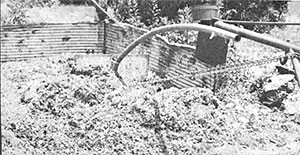
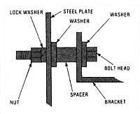
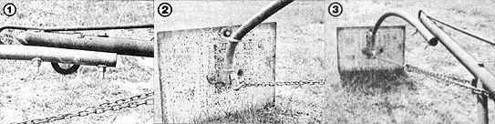

Ease the workload on your farmstead with. . .
Most farmfolks will agree that unloading manure and compost with a hand shovel is just about the most unpleasant task imaginable. My husband Fred and I thought so, too . . . and - thanks to our homemade "pooper mover" - we now let the tractor take care of such tiring (and messy) chores.
The "mover" comes in quite handy for a number of other jobs around our Florida homestead, too. We frequently use our invention to dump manure on the garden, to drag water hyacinth from the Withlacoochee River, and to move heavy logs over short distances.
If you have a tractor - and a little bit of know-how - you ought to be able to build and use the same gadget . . . or modify our design to fit your own specific needs. (With a lot of scrounging, we were able to assemble our device for only $12! If you're handy at "hardware foraging", you can probably keep your expenses as low as - or maybe even lower than - ours were.)
The "pooper mover" was born of the desire to use an old '56 Ford 8N tractor to scrape manure out of our truck, over its lowered tailgate, and onto the ground. And although our standard boom crane was too short to handle the task, my husband decided that the apparatus could be modified so it would work.
(For the information of any folks who might be unfamiliar with tractors . . . a boom crane consists basically of one or more hooks fastened to a steel framework which, in turn, fits onto the tractor's three-point hitch. The attachment is used to lift machinery, bales, and so forth. Since such implements can be bought new for around $80, chances are that - if you don't already have one - you'll be able to purchase a used unit at a fairly reasonable price.)
When Fred set out to "fix" our crane, he knew the boom would have to be made longer. And the means to this end turned out to be right in our own junkyard . . . in the form of a street-lamp "extension arm" (the curved stem that holds the light away from the lamppost). Of course, any piece of curved pipe (approximately 1-1/2" in diameter and 72" long) would have done the job just as well.
Since we still wanted to be able to use our boom for other tasks, too, we decided to bolt (rather than weld) the extension arm in place. To do this, Fred first clamped the lamppost arm under the crane's tip, with an overlap of about 12 inches. Then - using a 9/16" bit - he drilled two holes . . . spaced 7 inches apart and centered so each bore was 2-1/2 inches from the nearest end of the overlap (as in Photo 1) .
We fastened the tubes together with a pair of 5-1/2" X 1/2" hardened steel bolts (be sure to ask for such fasteners specifically . . . "regular" bolts won't be able to withstand the stress placed on the joint by heavy lifting or dragging).
With the "new" longer arm in place, we needed a piece of metal to serve as our scoop. The local salvage yard owner recommended that we use hardened steel for this purpose, too, and sold us a piece of 1/4" plate measuring 18-1/2" X 26" . . , which would be small enough to fit into tight places when in use.
Our street-lamp extension arm came equipped with two brackets which we used to secure the steel plate in position (see Photo 2) . The lower (double-ended) mounting hardware was fastened to the scoop with a pair of 1-1/2" X 1/2" bolts and lock washers . . . while a 1" spacer (simply a piece of pipe cut to length) was used between the upper bracket and the steel plate. A 3-1/2" X 1/2" bolt holds this "top" assembly together, as shown in the accompanying diagram. (If you fashion your extender from a length of conduit, all you'll have to do is attach two similar brackets to the pipe.)
Finally, we welded an "eye" onto the lower mounting point, to accommodate the hook of a tow chain which was secured - at its far end - to the boom crane itself (as shown in Photo 3). The chain adds strength to the whole assembly, since it effectively prevents the extension arm from bending when the unloader is pulling.
In practice, we have found that our homemade scraper leaves about two inches of manure just behind the cab of the truck, but it's easy enough to get rid of those hard-to-reach remnants with a shovel. Fred manages to maneuver the scoop around the truck bed's wheel wells by judicious use of the tractor's steering. (A little steering goes along way, since the working plate is 11-1/2 feet behind the tractor.)
In addition, I've found it an easy matter to use the device to turn compost - in less than 10 minutes - -by simply pulling the decomposing material out of our big three-sided bin and then pushing it back in again.
There you have it: a device that's simple to build and operate, has no moving parts, and will help you create a healthier garden . . . by making short work of your most strenuous and time-consuming chores.
Who knows? Maybe you'll start with our design and modify it to tackle the specific heavy labor around your place. I hope so, because - if you do - you'll experience the same satisfaction I get every time I use the "pooper mover" . . . the joy that comes from knowing that we got the job done by relying on ourselves and making do with what we had.
|
 |
 |
 |